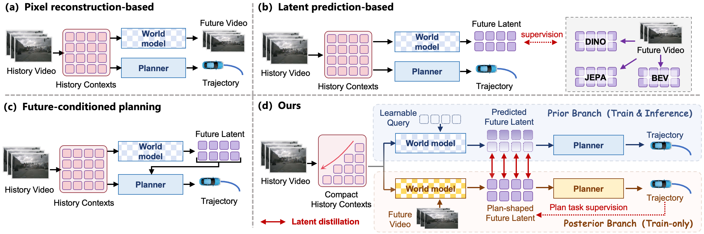
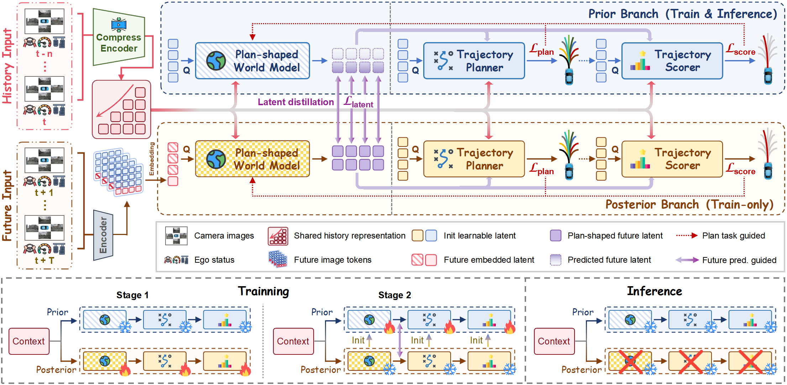
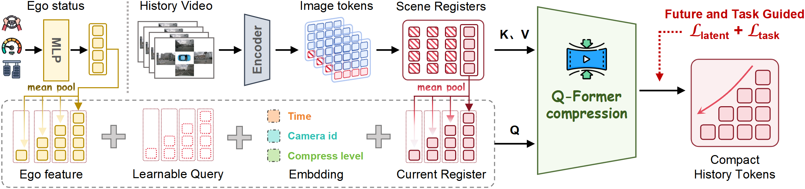
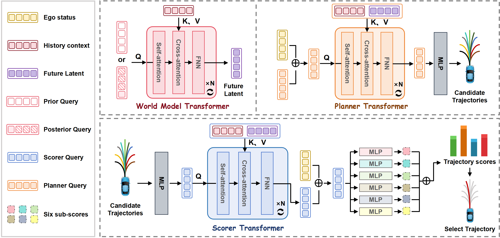
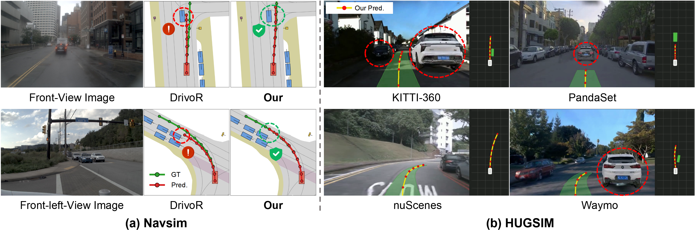
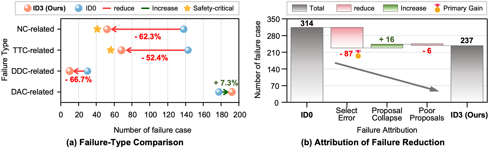

Planning defines the future
The future representation is shaped directly by the trajectory-planning objectives, so it preferentially encodes the future information that affects trajectory decisions.
1Southeast University · 2NIO · 3Nanyang Technological University · 4Tongji University
†Equal contribution. · ‡Project leader. · *Corresponding author.
Driving world models usually ask how to predict the future and how to use it. PlanWAM asks which future representation is most useful for planning. Trajectory-planning objectives shape a future latent from privileged future observations; a history-only prior predicts that latent and uses it for trajectory generation and selection.
A future representation that can reconstruct the scene does not necessarily retain the information that changes a trajectory decision. PlanWAM treats future modeling as planning-shaped predictive representation learning: planning defines which future information matters, future prediction decides which history to keep, and the predicted future then improves planning.
A train-only posterior learns the future latent from real future frames under planning losses. A history-only prior learns to predict it and is the only branch used at inference.
Driving world-action models have moved from pixel reconstruction, to latent prediction, to future-conditioned planning. The last step lets a future state z+ enter the planner, but still leaves open how that state should be defined. Existing targets are usually pixels or image latents. PlanWAM defines the target by the planning losses themselves.

The future representation is shaped directly by the trajectory-planning objectives, so it preferentially encodes the future information that affects trajectory decisions.
History is compressed to the dynamic cues needed for future reasoning and planning. What is kept is decided by the future to be predicted, not by retaining the full observation.
Ground-truth future frames exist only in training. Distillation turns that privileged hindsight into a prior that runs on history alone.
PlanWAM inserts a future latent between history and planning, and lets the planning losses decide what that latent encodes.

Compresses multi-frame, multi-view history into a compact representation, giving recent frames more capacity.
In training, a posterior reads real future frames. Trajectory generation and scoring shape its latent, with no reconstruction loss.
A history-only prior learns to predict that latent, turning hindsight available in training into foresight available at deployment.
The predicted latent conditions both trajectory generation and trajectory selection.
L_task = L_plan + L_score
L_train = L_task + λ L_latent


PlanWAM is trained on NAVSIM navtrain (103,288 scenes: 85k train / 18k validation) and evaluated on navtest (12,146 scenes).
NAVSIM-v1 uses PDMS. NAVSIM-v2 uses EPDMS on the same split.
The same checkpoint is then deployed on HUGSIM, a closed-loop simulator with 436 public scenarios from nuScenes, KITTI-360, Waymo, and PandaSet, without HUGSIM-specific fine-tuning.
The best learned result in each column is shown in bold. PlanWAM reaches 90.9 EPDMS, 1.0 above DriveFuture and 0.6 above the reported Human Agent. It also obtains the best learned NC (99.0) and TTC (98.5).
| Method | Reference | NC | DAC | DDC | TLC | EP | TTC | LK | HC | EC | EPDMS |
|---|---|---|---|---|---|---|---|---|---|---|---|
| Human Agent | - | 100.0 | 100.0 | 99.8 | 100.0 | 87.4 | 100.0 | 100.0 | 98.1 | 90.1 | 90.3 |
| E2E-based planners | |||||||||||
| TransFuser | TPAMI'23 | 96.9 | 89.9 | 97.8 | 99.7 | 87.1 | 95.4 | 92.7 | 98.3 | 87.2 | 76.7 |
| DiffusionDrive | CVPR'25 | 98.2 | 95.9 | 99.4 | 99.8 | 87.5 | 97.3 | 96.8 | 98.3 | 87.7 | 84.5 |
| MeanFuser | CVPR'26 | 98.3 | 97.2 | 99.6 | 99.8 | 87.6 | 97.4 | 97.3 | 98.3 | 88.2 | 89.5 |
| VLM-based planners | |||||||||||
| ReCogDrive | ICLR'26 | 98.3 | 95.2 | 99.5 | 99.8 | 87.1 | 97.5 | 96.6 | 98.3 | 86.5 | 83.6 |
| SGDrive | CVPR'26 | 98.6 | 94.3 | 99.5 | 99.9 | 86.0 | 97.9 | 96.1 | 98.3 | 85.9 | 86.2 |
| ExploreVLA | ECCV'26 | 98.8 | 96.2 | 99.6 | 99.8 | 87.1 | 98.2 | 97.8 | 98.3 | 86.8 | 88.8 |
| World-model-based planners | |||||||||||
| DriveVLA-W0 | ICLR'26 | 98.5 | 99.1 | 98.0 | 99.7 | 86.4 | 98.1 | 93.2 | 97.9 | 58.9 | 86.1 |
| DriveLaW | CVPR'26 | 98.7 | 96.9 | 99.6 | 99.8 | 87.5 | 98.3 | 97.6 | 98.4 | 77.4 | 88.6 |
| DreamerAD | ECCV'26 | 98.0 | 97.2 | 99.5 | 99.8 | 87.8 | 97.4 | 97.5 | 98.3 | 72.4 | 87.7 |
| Latent-WAM | arXiv'26 | 98.1 | 97.3 | 99.6 | 99.8 | 87.7 | 97.3 | 97.6 | 98.1 | 87.3 | 89.3 |
| DriveFuture | arXiv'26 | 98.8 | 99.1 | 99.6 | 99.9 | 86.6 | 98.4 | 96.4 | 98.3 | 74.8 | 89.9 |
| PlanWAM (ours) | - | 99.0 | 99.2 | 99.8 | 99.6 | 90.8 | 98.5 | 96.5 | 98.1 | 70.5 | 90.9 |
PlanWAM reaches 93.8 PDMS, 0.7 above DrivoR and 3.1 above the strongest prior world-model planner, DriveFuture. The best learned ego-progress score is 91.0.
| Method | NC | DAC | TTC | C | EP | PDMS |
|---|---|---|---|---|---|---|
| Human Agent | 100.0 | 100.0 | 100.0 | 99.9 | 87.5 | 94.8 |
| E2E-based planners | ||||||
| DiffusionDrive | 98.2 | 96.2 | 94.7 | 100.0 | 82.2 | 88.1 |
| MeanFuser | 98.6 | 97.0 | 95.0 | 100.0 | 82.8 | 89.0 |
| iPad | 98.6 | 98.3 | 94.9 | 100.0 | 88.0 | 91.7 |
| DrivoR | 98.9 | 98.3 | 96.2 | 100.0 | 89.1 | 93.1 |
| VLM-based planners | ||||||
| AutoVLA | 98.4 | 95.6 | 98.0 | 99.9 | 81.9 | 89.1 |
| ReCogDrive | 97.9 | 97.3 | 94.9 | 100.0 | 87.3 | 90.8 |
| ExploreVLA | 98.8 | 98.4 | 96.5 | 99.9 | 83.5 | 90.4 |
| SGDrive | 98.6 | 97.8 | 96.2 | 100.0 | 85.8 | 91.1 |
| World-model-based planners | ||||||
| WoTE | 98.5 | 96.8 | 94.9 | 99.9 | 81.9 | 88.3 |
| Epona | 97.9 | 95.1 | 93.8 | 99.9 | 80.4 | 86.2 |
| DreamerAD | 98.0 | 97.2 | 94.3 | 100.0 | 83.1 | 88.7 |
| DriveLaW | 99.0 | 97.1 | 96.7 | 100.0 | 81.3 | 89.1 |
| DriveVLA-W0 | 98.7 | 99.1 | 95.3 | 99.3 | 83.3 | 90.2 |
| DriveFuture | 98.8 | 99.1 | 95.4 | 100.0 | 84.2 | 90.7 |
| PlanWAM (ours) | 98.9 | 98.8 | 96.3 | 100.0 | 91.0 | 93.8 |
E, M, H, and X are Easy, Medium, Hard, and Extreme (80 / 157 / 96 / 103 scenarios). Avg. is the mean over all 436 scenarios, not the unweighted mean of the four difficulties. PlanWAM improves the strongest baselines by 7.8 RC and 9.8 HD-Score. On Hard / Extreme it reaches 51.9 / 37.2 RC and 35.6 / 22.0 HD-Score.
| Method | E | M | H | X | Avg. |
|---|---|---|---|---|---|
| Route Completion | |||||
| UniAD | 58.6 | 41.2 | 40.4 | 26.0 | 40.6 |
| VAD | 38.7 | 27.0 | 25.5 | 23.0 | 27.9 |
| LTF | 68.4 | 40.7 | 36.9 | 25.5 | 41.4 |
| GTRS-Dense | 64.2 | 50.0 | 20.7 | 22.3 | 38.0 |
| Latent-WAM | 84.2 | 42.5 | 30.6 | 35.5 | 45.9 |
| PlanWAM (ours) | 87.6 | 48.3 | 51.9 | 37.2 | 53.7 |
| HD-Score | |||||
| UniAD | 48.7 | 29.5 | 27.3 | 14.3 | 28.9 |
| VAD | 24.3 | 9.9 | 10.4 | 8.2 | 12.3 |
| LTF | 52.8 | 24.6 | 19.8 | 8.1 | 24.8 |
| GTRS-Dense | 55.5 | 39.0 | 11.7 | 14.3 | 28.6 |
| Latent-WAM | 72.5 | 24.0 | 12.2 | 18.1 | 28.9 |
| PlanWAM (ours) | 75.3 | 32.9 | 35.6 | 22.0 | 38.7 |

Failed scenes on NAVSIM-v1 fall from 314 to 237. The ones that disappear are collisions, short time-to-collision, and wrong-direction driving. Staying inside the drivable area does not improve. Nearly all of the reduction is a better choice among the candidates: selection errors drop by 87, while proposal collapse increases.

Please cite this preprint as follows.
@misc{planwam2026,
title = {PlanWAM: Planning-Shaped Future Representations for End-to-End Autonomous Driving},
author = {Xu, Jinchang and Yu, Hongda and Dong, Fengwei and Huang, Wenhui and Wei, Xi and Liu, Yongzhi and Zhang, Sunan and Wang, Jirao and Lv, Chen and Li, Bingbing and Yin, Guodong and Zhuang, Weichao},
year = {2026},
note = {Preprint}
}